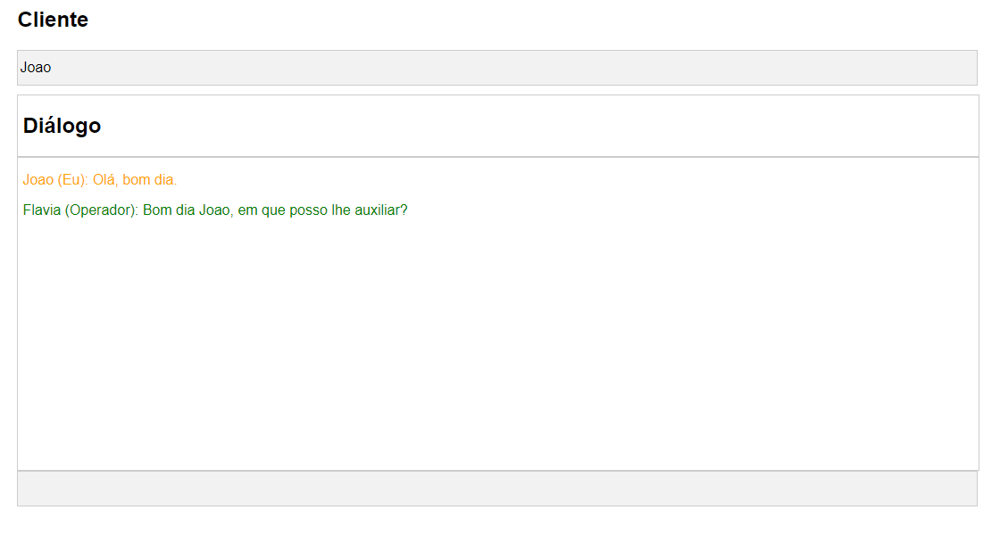

Desenvolvedor
Full Stack


Sou um profissional formado em Análise e Desenvolvimento de Sistemas, com habilidades que abrangem desde o mapeamento de processos até a modelagem de dados e o desenvolvimento de aplicativos para web e dispositivos móveis. Além disso, tenho experiência em gerenciamento de projetos, atuando como elo entre a administração da empresa e a equipe de tecnologia. Minhas competências incluem o domínio das tecnologias Next.js, React Native, MongoDB e Node.js.
Gestor escolar: Este é um projeto que utiliza a tecnologia Next.js para criar um sistema web completo, incluindo frontend e backend. O Next.js aproveita o React para carregar apenas o necessário, proporcionando uma experiência de usuário mais eficiente.
Servidor websocket: Configura um servidor WebSocket simples que pode receber mensagens dos clientes e transmiti-las para todos os clientes conectados. É um exemplo básico de uso do Socket.IO para criar comunicações em tempo real.
